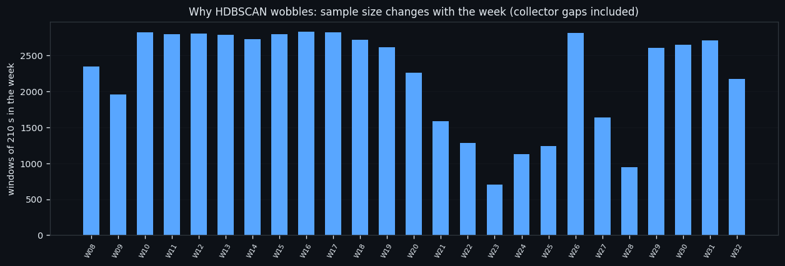
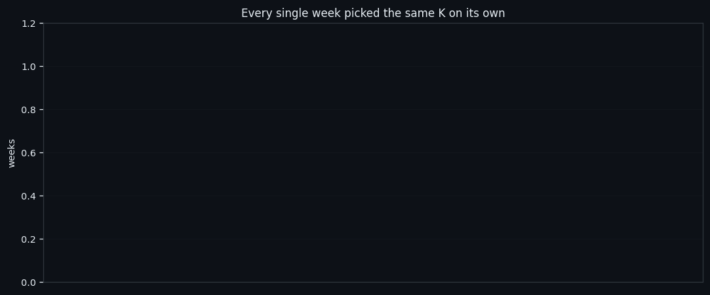
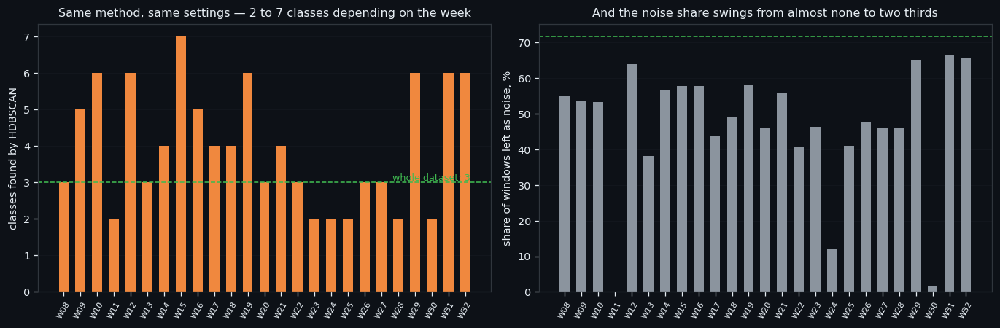
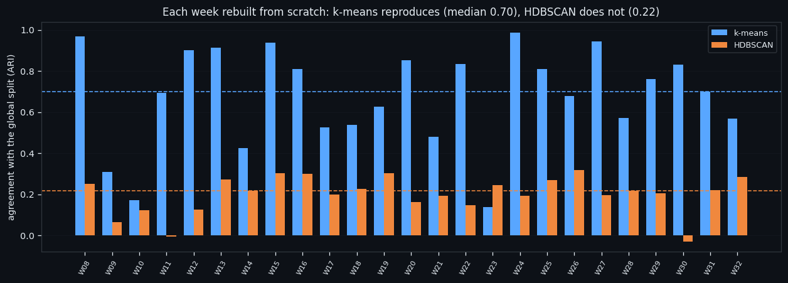

Twenty-Five Weeks, Twenty-Five Rebuilds: Which Clustering Survives
A clustering that only exists once is a story, not a result. So we rebuilt it 25 times — every week of the dataset from scratch, its own PCA, its own UMAP, its own clusters — and compared each week with the answer found on the whole dataset. One of the two methods reproduces. The other does not, and it is the fashionable one.
Full walkthrough — streamed from YouTube.
① Rebuilt, not scored
The protocol is deliberately harsh. A week is not scored by the global model — it is rebuilt completely: its own feature scale, its own PCA, its own UMAP, its own clusters, with min_cluster_size scaled to the week's size. Only then are the two label sets compared, by adjusted Rand index, which is invariant to how the classes happen to be numbered.
| | value | |---|---| | weeks in the dataset | 26 (25 large enough to count) | | windows per week | from 707 to 2,831 | | what is compared | each week's labels against the labels of the full-dataset run |
Everything in this series feeds one goal: an automated trading bot that reads the order book instead of the price. A bot retrains on a rolling window of recent data, so "does this structure exist in any given week" is not an academic question — it is the difference between a model that can be refreshed and one that has to be rediscovered every time.

② k-means: the same answer every week
k-means reproduces itself, and it does so twice over.
| | value | |---|---| | weeks that chose the same K on their own | 0 of 25 | | median agreement with the global split | 0.699 | | worst week | 0.138 | | best week | 0.988 |
Every single week, independently, decided that its own data supports the same number of classes, and in a typical week the labels agree with the global ones on the great majority of windows. The bad weeks are not random either — they are the small ones, where the number of windows drops.
Everything in this series feeds one goal: an automated trading bot that reads the order book instead of the price. This is the result that makes the whole line usable: the "is there inflow" axis is a property of the market, not of the particular five months we happened to collect.

③ HDBSCAN: two classes or seven, depending on the week
HDBSCAN does not reproduce.
| | value | |---|---| | median agreement with the global split | 0.216 | | range across weeks | -0.029 … 0.318 | | classes found per week | from 2 to 7 | | noise share per week | from 0% to 66% |
Same method, same settings, same market — and depending on the week it returns two classes with almost no noise, or seven classes with two thirds of the data unplaced. It is not wrong; it is sensitive to sample size in a way that k-means is not, and a week is a much smaller sample than five months.
This matches what the earlier studies in this project found on a monthly split, and it is the reason we report both methods everywhere instead of picking the one with the nicer picture.
Everything in this series feeds one goal: an automated trading bot that reads the order book instead of the price. An unstable partition cannot be a production feature. If a class exists in June and not in July, a bot that keys on it is trading a calendar.

④ What survives, and what that means in practice
What we keep from this. The axis is stable; the density-based subdivision of it is not. In practice that means: use k-means (or, better, the explicit threshold rules it implies) for anything that has to run continuously, and use HDBSCAN only to explore — with a full rebuild and a hard null every single time.
There is also a warning in these numbers for anyone reading clustering results in general. The hard null in this project regularly produces more classes than the real data, at the same noise share. If a study reports "we found seven clusters" without saying what shuffled data produces, that sentence carries no information at all.
What is next. With the stable part identified, the following studies use it to clean the dataset: remove what provably carries no reversals, check what is left, and write the whole procedure down as a repeatable recipe so it can be run on the other five coins. Everything in this series feeds one goal: an automated trading bot that reads the order book instead of the price. A smaller, denser dataset trains faster and lets us test more ideas per day, which is the entire bottleneck of this project right now.

If this changed how you read the tape, the natural next step is Throwing Away a Third of the Data and Keeping 98% of the Reversals —
Throwing Away a Third of the Data and Keeping 98% of the Reversals
A Recipe, Not a Result: How We Clean an Order-Book Dataset
Volume Is the Fuel — Not the Steering Wheel
We recorded the Binance order book every second for six coins over five months and ran eighteen tests on what volume really does.
About Market Research Lab — What We Collect and Why
Most market commentary is storytelling.
Comments
Discussion is powered by GitHub. Enable it by adding secrets/giscus.json (repo IDs from giscus.app).